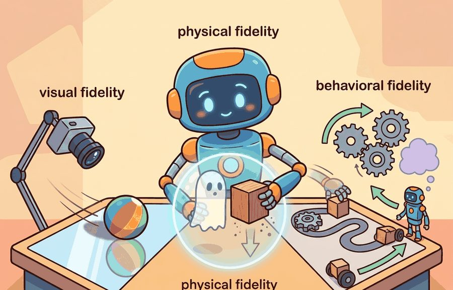
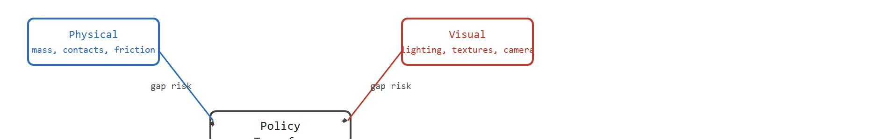

"Realism is not a volume knob. It is a mixing board with labels you should read before touching anything."
A Calibration-Minded AI Agent

This section builds on the simulator roles introduced in section 9.2, where simulation was framed as a data generator and controlled testbed. The fidelity axes defined here (physical, visual, sensor, behavioral) are the vocabulary used throughout the rest of the book: section 9.4 turns those axes into measurable reality-gap quantities, and Part V (sections 18.1 through 18.3) returns to fidelity trade-offs when scaling sim-to-real transfer for manipulation and locomotion policies.
A robot arm trained on a million simulated grasps fails the moment it touches a real silicone surface, because the simulator modeled rigid contacts and the real object deforms. The physics looked right; the fidelity axis that mattered was wrong. Fidelity is not a single dial. It decomposes into at least four independent axes: physical, visual, sensor, and behavioral, and a mismatch on any one axis can collapse a policy that performed perfectly in simulation. Right now, as embodied AI moves from lab curiosities to household and warehouse deployment, choosing the right fidelity level on each axis is one of the sharpest decisions a practitioner makes. This section gives you the vocabulary and the framework to make that choice deliberately.
Ask an engineer whether their simulator is "realistic" and you will get a confident yes, yet the same simulator can be flawless for one task and useless for the next, because realism is not one property but several that fail independently. Physical fidelity concerns dynamics: mass, inertia, friction, contacts, compliance, and actuation. Visual fidelity concerns rendered images, lighting, materials, camera models, and occlusions. Behavioral fidelity concerns whether the environment responds in ways that matter for the task: doors open, objects move, receptacles contain, fluids pour, and failure states persist. Figure 9.3A places these concerns on a spectrum from coarse rigid-body physics to full photorealistic rendering, annotating each level with the engine, solver, and policy type that benefits most. Because a mismatch on any single axis can collapse an otherwise well-trained policy, practitioners must treat this as four independent transfer risks, not one. Figure 9.3B shows these four axes feeding a separate gap risk into policy transfer, so a failure on any one can sink the result even when the other three match reality.

A visually simple MuJoCo model can be enough for torque-control research. A perception policy may need Omniverse Replicator or BlenderProc imagery with camera artifacts. A household agent may need Habitat, AI2-THOR, ProcTHOR, BEHAVIOR, or OmniGibson-style object semantics because the claim depends on scene interaction, not just contact physics.
High visual fidelity cannot rescue wrong contact physics, and accurate contact physics cannot rescue a sensor model that gives the policy information the real robot never observes.
| Axis | What It Models | Where It Matters |
|---|---|---|
| Physical | Mass, contacts, friction, actuation, delay | Manipulation, locomotion, grasp stability, pushing |
| Visual | Lighting, textures, camera intrinsics, occlusion | Vision policies, detection, segmentation, pose estimation |
| Sensor | Noise, dropout, blur, calibration, frame timing | State estimation, navigation, visual servoing |
| Behavioral | Object affordances, state changes, task semantics | Household tasks, long-horizon planning, language grounding |
Code Fragment 9.3.1 is a simple fidelity checklist. It maps task needs to simulator capabilities so the team can defend why a tool is sufficient for a particular claim.
# Match simulator capabilities to the task's transfer risks.
# The output exposes unsupported fidelity axes before training begins.
task_needs = {"contact", "depth_noise", "object_state"}
simulators = {
"MuJoCo": {"contact", "actuation"},
"Isaac Lab": {"contact", "depth_noise", "camera_rendering"},
"ProcTHOR": {"object_state", "layout_diversity", "camera_rendering"},
}
for name, capabilities in simulators.items():
missing = sorted(task_needs - capabilities)
status = "ready" if not missing else f"missing {missing}"
print(name, status)MuJoCo missing ['depth_noise', 'object_state'] Isaac Lab missing ['object_state'] ProcTHOR missing ['contact', 'depth_noise']
missing list becomes the experiment's transfer-risk ledger.Expected output: the trace identifies which simulator capabilities are missing for the task contract. That missing list is not a rejection of the simulator. It is the list of reality-gap assumptions that the experiment must either measure, randomize, or exclude from the claim.
The checklist is about 12 lines. In practice, simulator choice should become a versioned artifact beside the experiment config, using Isaac Lab, MuJoCo, ManiSkill, robosuite, Habitat, or ProcTHOR documentation to record supported physics, sensors, assets, and task semantics. The hand checklist is useful because it prevents tool choice by reputation alone.
Of the four axes the checklist tracks, behavioral fidelity is the easiest to overlook, because its failures show up only after many steps rather than on the first contact. Behavioral fidelity matters because long-horizon tasks require the world to remember what the agent did. A robot that opens a drawer, removes an object, and closes the drawer again needs the simulator to persist all three state changes independently. If the simulator resets object positions on each physics step, the policy learns to act in a world that never accumulates consequences. That skill does not transfer. In practice, teams running a five-step kitchen task without persistent object state have reported needing on the order of tens of thousands of episodes to stumble into a successful sequence, while the same policy with full state persistence has converged in well under a tenth of that; exact ratios vary by task and reward shaping, but the qualitative gap is consistent, because every partial success survives as a stepping stone rather than vanishing. On a real robot, a misplaced lid stays misplaced; a simulator with weak behavioral fidelity silently undoes the error, training the policy to ignore irreversible actions.
The checklist in Code Fragment 9.3.1 tells you a simulator is missing an axis; it does not tell you what to do about a missing behavioral axis specifically. In practice a team facing that gap has three options: switch to a simulator with native scene-state support (Habitat, BEHAVIOR, or OmniGibson), author a light-weight state-transition rule layer on top of an existing physics-only simulator (as described next), or narrow the claim to exclude any statement about persistent object state. The scene-state graph described below is the mechanism, not just a definition of the axis.
Simulators implement behavioral fidelity through a scene-state graph. Every interactable object carries a discrete state (open, closed, filled, broken) alongside its continuous pose. On each environment step, the physics engine updates pose. A separate rule layer then evaluates contact events and transitions object states. A drawer moves from closed to open when the end-effector applies force along the slide axis above the joint limit. That state transition holds until the agent applies the reverse action. This persistence is what makes consequences accumulate.
So far: behavioral fidelity means the simulated world remembers state changes (open drawers stay open, moved objects stay moved), it is implemented via a scene-state graph with discrete per-object states plus a rule layer that transitions them on contact, and losing this persistence quietly erases the training signal for irreversible actions.
Think of behavioral fidelity like cooking on a real stove versus a painting of a stove. If you add salt to the painted pot, the soup does not get saltier; if you turn the painted burner off, nothing cools. A simulator with weak behavioral fidelity works the same way: the agent's actions leave no mark, so every step begins from a pristine world. A real kitchen remembers every action taken in it, and a behaviorally faithful simulator must do the same, right down to the spilled oil that stays on the counter until someone wipes it up.
Each task has its own transfer-critical mismatches. A legged locomotion policy hinges on ground contact, actuator delay, IMU (inertial measurement unit, the onboard sensor that reports orientation and acceleration) noise, terrain variation, and controller frequency. A vision-based grasp detector hinges on depth holes, reflective materials, occlusions, camera calibration, and object shape. A household agent hinges on object state and task semantics, where photorealistic walls barely register.
Note: the algorithm below adds a fifth axis, task, to the four introduced earlier (physical, visual, sensor, behavioral). Task fidelity covers goal-specific artifacts a general axis does not capture, such as a required object category or a scripted event; it is why the Step-Through and Exercise below can mark axes that fall outside physical, visual, sensor, or behavioral.
Input: Task description $\mathcal{T}$, candidate simulator set $\mathcal{S} = \{s_1, s_2, \ldots, s_n\}$, fidelity axes $\mathcal{A} = \{\alpha_1, \alpha_2, \ldots, \alpha_k\}$ (physical, visual, sensor, behavioral, task)
Output: Selected simulator $s^*$, gap ledger $\mathcal{G}$ mapping each unsupported axis to a mitigation strategy $\pi_\alpha$
For Fidelity: physical, visual, behavioral, a simulator run becomes evidence only after the falsifiable hypothesis, held-out seeds, perturbation panel, and untested real-world assumption are written down.
A common instinct is to maximize fidelity on every axis in search of the best-trained policy, defaulting to the most photorealistic or physically detailed simulator available. This is wrong in embodied AI: unnecessary fidelity on a non-critical axis adds rendering cost, slows rollout throughput, and can introduce new mismatches on axes the task does not need. A locomotion policy trained with expensive ray-traced lighting gains nothing from visual realism while losing the thousands of parallel physics rollouts that contact fidelity actually requires. The correct mental model is task-first: identify which mismatch on which axis would change the policy decision, match fidelity there, and leave non-critical axes cheap and fast.
The phrase high fidelity is incomplete unless it names the axis. A benchmark can be visually rich and physically weak, or physically precise and behaviorally too simple for a household claim.
A team trains a grasping policy in Isaac Lab, achieves 94% success in simulation, then observes roughly 40% success on the physical robot. The natural instinct is to blame the policy. The actual cause is often a sensor-fidelity gap: the simulated depth camera produces clean, complete point clouds, while the real RealSense camera (Intel's depth-sensing camera line commonly mounted on robot wrists and heads) produces dropout patches on reflective or dark surfaces. Because the policy was never exposed to depth holes, it interprets missing geometry as free space and plans grasps into occluded regions. The fix is not more training; it is adding a simulated depth-dropout noise model to the sensor fidelity axis before the training run.
For a mobile manipulator in a kitchen, a team might use ProcTHOR or Habitat-style scenes to study navigation and object layout, then MuJoCo or Isaac Lab for contact-rich grasping. The split is defensible only if the evaluation artifact states which construct each simulator measures.
A beautiful simulation with the wrong friction is a glossy brochure for a skill the robot does not have.
Neural rendering for sensor-fidelity closure (2024-2026). Gaussian Splatting and Neural Radiance Field (NeRF)-derived scene representations are being coupled directly to robot-learning simulators so that rendered depth and RGB images match real sensor statistics with no hand-crafted noise model. NVIDIA's lab demonstrated this pipeline with Sim-to-Real transfer via NeRF in Isaac Lab (2024), reporting a reduced residual visual-fidelity gap on tabletop manipulation benchmarks; results are typically benchmark-specific and have not yet been shown to generalize across scene types. The direction is active: several groups are now replacing static asset libraries with live-captured Gaussian splat scenes.
Foundation-model-grounded behavioral fidelity (2024-2026). Large vision-language models (VLMs, models that jointly process images and text to produce language-grounded judgments) are being used as scene-state oracles to give simulators richer behavioral semantics without hand-authored rule graphs. The RT-2 line of work (Google DeepMind, 2023) and OpenVLA (Kim et al., UC Berkeley/Stanford, 2024) showed that VLM-in-the-loop evaluation catches behavioral-fidelity failures that numeric reward signals miss entirely. Current research is extending this to automatic gap detection: the VLM compares simulated rollout frames against real-robot frames and flags state-transition mismatches before training completes.
Adaptive fidelity scheduling during training (2024-2026). Rather than fixing the fidelity level before a run, recent work schedules fidelity across axes as a curriculum. ManiSkill3 (Gu et al., 2024) introduced GPU-parallel rendering at variable resolution so that early training uses cheap physics-only rollouts and later training injects photorealistic frames only when the policy gradient is sensitive to visual inputs. The approach reduces wall-clock cost by roughly 3-5x on the contact-rich tasks reported so far, without sacrificing sim-to-real transfer rate on those tasks.
Open problem. All three directions treat each fidelity axis as separately schedulable, but there is no principled theory for when a mismatch on one axis amplifies the gap on another. For example, it is empirically observed that high visual fidelity with low contact fidelity sometimes degrades transfer more than low fidelity on both axes, yet no formal interaction model exists. Characterizing the cross-axis fidelity coupling (even for a narrow task class such as rigid planar pushing) would fill a genuine gap in the sim-to-real literature.
Trace the selection algorithm for a tabletop grasp task. Critical axes are $\mathcal{A}_{\text{critical}} = \{\text{physical}, \text{sensor}\}$ (contact and depth-dropout both change the grasp decision); visual and behavioral are non-critical here. Capability maps: $C(\text{MuJoCo}) = \{\text{physical}\}$, $C(\text{Isaac Lab}) = \{\text{physical}, \text{sensor}, \text{visual}\}$, $C(\text{ProcTHOR}) = \{\text{visual}, \text{behavioral}\}$. Compute gap sets: $\mathcal{G}(\text{MuJoCo}) = \{\text{physical},\text{sensor}\} \setminus \{\text{physical}\} = \{\text{sensor}\}$, so $|\mathcal{G}| = 1$. $\mathcal{G}(\text{Isaac Lab}) = \{\text{physical},\text{sensor}\} \setminus \{\text{physical},\text{sensor},\text{visual}\} = \{\,\}$, so $|\mathcal{G}| = 0$. $\mathcal{G}(\text{ProcTHOR}) = \{\text{physical},\text{sensor}\} \setminus \{\text{visual},\text{behavioral}\} = \{\text{physical},\text{sensor}\}$, so $|\mathcal{G}| = 2$. The arg-min picks $s^* = \text{Isaac Lab}$ with zero critical gaps. No mitigation strategy is needed because the gap ledger is empty, but the claim is still scoped to physical and sensor axes only: a behavioral-fidelity success statement would be unsupported.
Covariant's pick-and-place robots are trained on contact-rich grasping in simulation, then deployed to live warehouses where parcels are reflective, deformable, and partially occluded. The team matches physical and sensor fidelity (contact dynamics plus realistic depth-camera dropout) while leaving warehouse wall textures deliberately low fidelity, because the grasp decision never depends on them. This axis-specific budgeting is exactly why their policies survive the move from rendered bins to real conveyor belts.
Goal: show empirically that a clean simulated depth sensor inflates grasp success relative to a noisy one, isolating the sensor fidelity axis.
Tools needed: Python with pybullet and numpy (pip install pybullet numpy); a simple loaded object such as PyBullet's built-in duck_vhacd.urdf or a tray of primitives.
Steps: Load a scene, render a depth image with p.getCameraImage, and run a trivial top-down grasp heuristic that targets the nearest depth minimum. Run 100 trials and log the success rate. Then add a dropout noise model: zero out depth pixels on high-curvature or steep-incidence surfaces (set roughly 15 percent of pixels to NaN to mimic a RealSense on reflective material) and rerun the same 100 trials.
What to vary: the dropout fraction (0, 5, 15, 30 percent) and whether dropout is random versus surface-correlated.
What to observe: success rate should fall sharply once dropout becomes surface-correlated rather than uniform, because the heuristic plans grasps into the missing geometry. The takeaway: the same physical scene yields very different transfer-relevant success depending only on the sensor model, which is the gap that the Common Pitfall callout warns about.
Name the fidelity axis that matters most for your task. If you cannot choose one, write the decision that the policy must make, then ask which simulated mismatch would change that decision.
Fidelity: physical, visual, behavioral becomes useful when it is tied to a closed-loop contract. In this chapter on Why Simulation Is Central, the contract names the observation stream, the state estimate, the action representation, the timing budget, and the evaluation artifact. Without that contract, a model can look capable in a notebook while failing the first time a sensor drops a frame or a controller saturates.
That contract also forces a discipline on how results are reported, because each part of it backs a different kind of claim. For fidelity, separate the conceptual claim, the systems claim, and the evidence claim. "Soft contacts should help deformable grasping" is a mechanism; "MuJoCo's MJX soft-body solver runs at 5,000 envs on an A100" is a systems claim; "the policy lifts a silicone cup 87% of the time on a real Franka" (the Franka Emika Panda, a widely used 7-degree-of-freedom research arm) is a closed-loop result. Keep their evidence separate: a working MJX solver does not prove the grasp transfers, and a high sim success rate does not prove the contact model matches the real silicone. Reporting one as if it backed another is how a 94%-in-Isaac-Lab number becomes a 40%-on-hardware surprise.
| Tool or Library | Role in Fidelity Selection | Builder Advice |
|---|---|---|
| Gymnasium | Defines the step/reset/reward contract that makes fidelity axis comparisons reproducible across simulators | Wrap every simulator backend in a Gymnasium-compatible interface so swapping MuJoCo for Isaac Lab changes only the physics axis, not the experiment harness. |
| PettingZoo | Extends the Gymnasium contract to multi-agent scenes; relevant when behavioral fidelity requires other agents (co-robots, humans, articulated objects) whose actions affect the task | Use for household or warehouse tasks where a second agent's policy or a human's presence changes the observation space; single-agent wrappers will silently drop those interactions. |
| ROS 2 | Provides the real-hardware message bus (sensor topics, TF frames, controller interfaces) against which simulated sensor fidelity is calibrated | Log a real RealSense or IMU stream as a ROS 2 bag, then replay it in simulation to quantify the depth-dropout rate and noise distribution before designing the sim noise model. |
| MuJoCo | High-speed rigid-body and soft-body physics at up to 10,000 environment steps per second on CPU; the reference engine for physical fidelity in manipulation and locomotion research | Use MuJoCo when the critical fidelity axis is contact or actuation: it resolves contacts at sub-millisecond precision. Switch to Isaac Lab when you also need GPU-parallel rollouts at scale (thousands of envs). |
| LeRobot | Provides standardized datasets (Franka, SO-100, Lekiwi) and policy checkpoints (ACT, Diffusion Policy, PI0) trained on real hardware, serving as the ground-truth behavioral baseline to compare against simulated rollouts | Before claiming simulation matches real-robot behavior, run the same LeRobot evaluation protocol on both; a sim policy that scores 90% but a LeRobot-pretrained policy scores 60% on the same real task signals an overfit to simulated visual or contact fidelity. |
For Fidelity: physical, visual, behavioral, start with a small baseline that logs inputs, outputs, units, timestamps, and termination conditions before moving to Gymnasium or PettingZoo. The library run should keep the same artifact schema, so the comparison remains a same-task evaluation.
Before reading on, guess: a locomotion policy achieves stable trotting in simulation but falls within three steps on the physical robot. Which single fidelity axis is most likely responsible? Hold your answer while you read the diagnostic below.
When an experiment about fidelity: physical, visual, behavioral fails, avoid labeling the whole method as weak. First assign the failure to perception, state estimation, planning, control, timing, data coverage, or evaluation. Then rerun one controlled perturbation that isolates the suspected cause. This pattern turns a disappointing rollout into a reusable diagnostic asset.
Consider a specific case. A locomotion policy trained in MuJoCo at 500 Hz achieves stable trotting in simulation, but falls within three steps on the real Unitree A1 robot (a small quadruped research platform). Step one logs the real robot's joint torques and compares them against the simulated torques at the same gait phase. If the real torques run consistently 15 to 20 percent higher, the gap points to actuator-model fidelity: the simulation used an idealized torque-controlled joint, while the real hardware applies PD control (a proportional-derivative feedback controller that sets torque from position and velocity error) at 1 kHz with its own latency. Step two introduces a simulated actuator delay of 10 ms and reruns training. Step three re-evaluates on the physical robot. If the success rate recovers from near-zero to above 80 percent under the same conditions, the diagnosis holds, and the experiment now has a falsifiable fidelity fix rather than a narrative about the "reality gap."
Beginner (weekend): Fidelity axis swap in Gymnasium. Build a CartPole or Pendulum environment in Gymnasium backed by PyBullet, then swap the physics backend to MuJoCo and measure the change in policy success rate without retraining; the key challenge is keeping the observation and reward contracts identical across backends so the comparison isolates the physics axis alone. Intermediate (1-2 weeks): Depth-dropout noise model for Isaac Lab grasping. Train a tabletop grasp policy in Isaac Lab using a clean simulated RealSense depth camera, record a real RealSense bag with ROS2 to measure dropout rates on reflective surfaces, add a parametric dropout noise model to the simulated sensor, and report how much the real-robot success rate improves; the key challenge is calibrating the noise distribution from the ROS2 bag so the simulated sensor matches the real sensor's failure modes rather than a generic noise model. Intermediate (1-2 weeks): Behavioral-fidelity audit with LeRobot. Use LeRobot's SO-100 dataset and a Gymnasium-wrapped household scene (such as a drawer-open task) to compare a policy trained with persistent object state against one trained without state persistence, then evaluate both on the real robot; the key challenge is designing an evaluation protocol that distinguishes failures caused by behavioral-fidelity gaps from failures caused by visual or contact gaps.
Fidelity is meaningful only when tied to a task decision and a measurable mismatch.
Create a fidelity matrix for a drone landing task. Include physical, visual, sensor, and task fidelity, then mark which mismatches would invalidate a success claim.
Section 9.4 turns simulator mismatch into a paired sim-real measurement.
This work shows how randomized dynamics can train policies that tolerate physical mismatch. It is a useful bridge from this chapter into later transfer and domain randomization chapters. Readers should connect this source to fidelity: physical, visual, behavioral when deciding what is reusable, what is benchmark-specific, and what must be remeasured.
Brockman, G. et al. (2016). "OpenAI Gym." arXiv.
The Gym paper explains the environment API that shaped modern reinforcement-learning experimentation. Readers should use it to understand why reset, step, render, and reward contracts became standard research infrastructure. Readers should connect this source to fidelity: physical, visual, behavioral when deciding what is reusable, what is benchmark-specific, and what must be remeasured.
This paper anchors the simulator design lineage behind much modern robot learning. It is useful here because it explains why fast, controllable simulation became central to model-based control and policy testing. Readers should connect this source to fidelity: physical, visual, behavioral when deciding what is reusable, what is benchmark-specific, and what must be remeasured.
Farama Foundation. "Gymnasium Documentation."
Gymnasium is the maintained successor interface for single-agent reinforcement-learning environments. It matters in this chapter because simulation evidence depends on reproducible environment boundaries and seed handling. Readers should connect this source to fidelity: physical, visual, behavioral when deciding what is reusable, what is benchmark-specific, and what must be remeasured.
NVIDIA. "Isaac Lab Documentation."
Isaac Lab documents a modern robot-learning workflow on top of Isaac Sim. Practitioners should read it when simulation must include vectorized tasks, assets, sensors, and learning-library integration. Readers should connect this source to fidelity: physical, visual, behavioral when deciding what is reusable, what is benchmark-specific, and what must be remeasured.